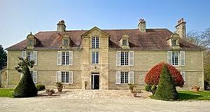
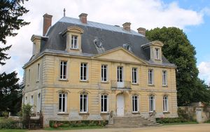
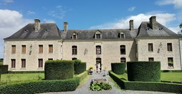
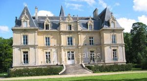
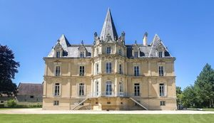
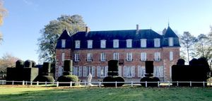
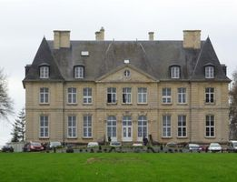
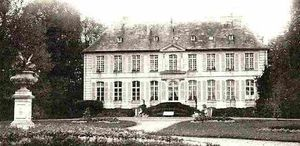
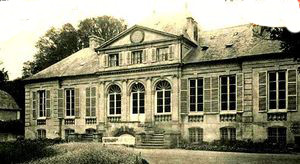

Recensement Jean-Claude Truffet
| Département | 14 — Calvados |
| Canton | Caen |
| Commune | Caen |
| Type d'édifice | Château |
| Période d'origine | XVI-XVIII |
| Coordonnées GPS | 49° 08' 20,1" Nord, 0° 23' 28,3" Ouest tour Leroy grav-4 GPS : 49° 11' 03" Nord, 0° 21' 33" Ouest Maltot PS : 49° 07' 50,02" Nord, 0° 24' 48,72" Ouest Cairon GPS : 49° 14' 20,41" Nord, 0° 27' 7,5" Ouest |









Six châteaux cité à Caen dont Caen, Maltot, Rots, Bû, Cairon, Fleury et Banneville. Au sud-ouest à deux K.M château de FLEURY sur Orne pas d'information historique. A cinq K.M. au sud ouest MALTOT date de 1740. Il a été bâti sur les plans de Philippe de la Guêpière, architecte du Roi Louis XV et de son Académie Royale d'Architecte. Le Château de Maltot est devenu un Centre de Formation. ROTS au nord-ouest à deux K.M. date du XIXe siècle de Emmanuel Grandsire. En banlieue à Anctioville le château de BÛ transformé en hôtel restaurant, les nouveaux châtelains, Se Ma et Andy Lee, sont coréens. Ils ont acquis la demeure en 2014, le château du Bû à Orbois, datant du XVIIIe siècle, a été occupé par les Allemands pendant la seconde guerre mondiale. Il a été partiellement détruit et racheté par M. Helleboid qui la restauré.
Tour LEROY, mentionnée pour la première fois en 1497, a été construite après la prise de Caen en 1346. Érigée non loin du château de Caen, elle faisait partie des fortifications de Bourg-le-Roi ; on y accédait depuis la muraille de la ville par un escalier extérieur. Elle était reliée par une chaîne à la tour aux Landais située sur la rive droite de l'Odon. Ce dispositif défendait l'entrée du port médiéval de Caen. Elle est transformée en maison d'habitations avant d'être utilisée comme prison pour les contrebandiers. La tour aux Landais a été détruite et, en 1860, la rivière a été recouverte. Le conseil municipal décide le 20 octobre 1879 de la conserver et de la restaurer. La restauration est effectuée par Gustave Auvray, architecte municipal.
BANNEVILLE à quelques K.M à l'Est on retrouve sur ces terres des vestiges de loccupation humaine remontant presque à la préhistoire. Plus proche de nous lorigine du nom serait de lanthroponyme scandinave Biarn et du latin villa domaine, Située à la limite de la plaine de Caen et du Pays dAuge, Banneville-la-Campagne est une commune au territoire étendu. En 1828 les hameaux de Guillerville et de Manneville sont rattachés à Banneville lui donnant ses limites actuelles. Le château de Banneville, construit au XVIIIe siècle, est l'ancienne demeure du marquis de Banneville.
CAIRON, au nord de Caen a été construit au XVIe siècle et remanié au XIXe siècle. Pendant la deuxième Guerre mondiale, il servit d'hôpital, de résidence aux Allemands, puis aux Alliés. On peut encore y voir des trous d'hommes et des trous de chars, où les soldats se tapissaient pour éviter les éclats d'obus horizontaux. Il accueillit ensuite le Général de Gaulle.
Il est inscrit aux M.H. depuis le 13/04/1933. Le corps de logis, qui, date du XVIIIe siècle.
TOUR LEROY Légèrement endommagée pendant la bataille de Caen, elle a fait l'objet d'une seconde restauration dans le seconde partie du XXe siècle. L'édifice est construit en pierre de Caen, matériau calcaire extrait du sous-sol de la ville. L'emprise au sol de la tour est de 79 m2. Elle comprend quatre niveaux : une salle basse, deux étages et une plateforme au sommet.
Philippe de la Guêpière Se Ma et Andy Lee marquis de Banneville
"
Six châteaux cité à Caen dont Caen, Maltot grav 1, Rots grav 4-5 Bû grav-2, Cairon grav-4, Fleury grav 6 et Banneville grav-6-7-8 Fleury GPS : 49° 08' 20,1" Nord, 0° 23' 28,3" Ouest tour Leroy grav-4 GPS : 49° 11' 03" Nord, 0° 21' 33" Ouest Maltot PS : 49° 07' 50,02" Nord, 0° 24' 48,72" Ouest Cairon GPS : 49° 14' 20,41" Nord, 0° 27' 7,5" Ouest